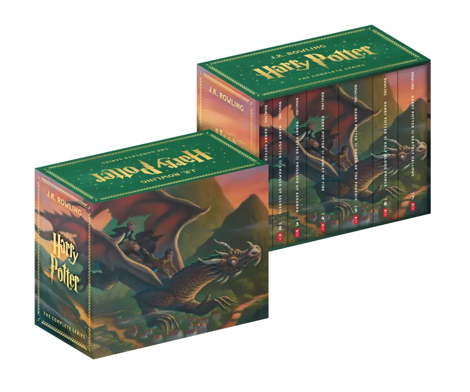
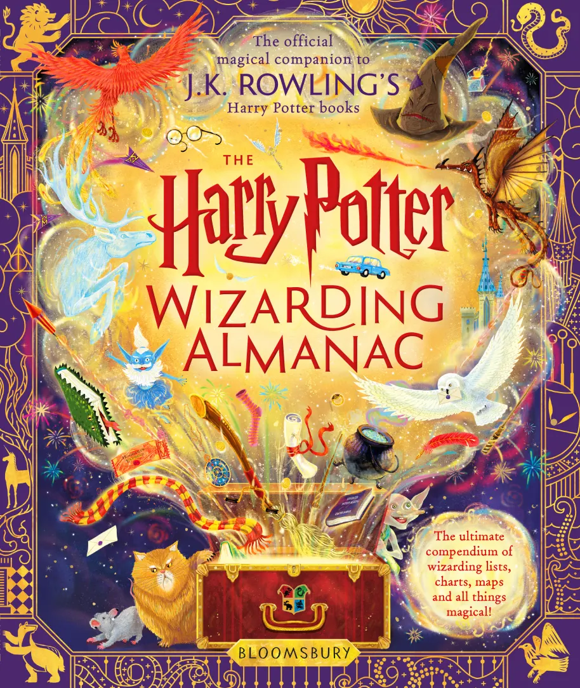
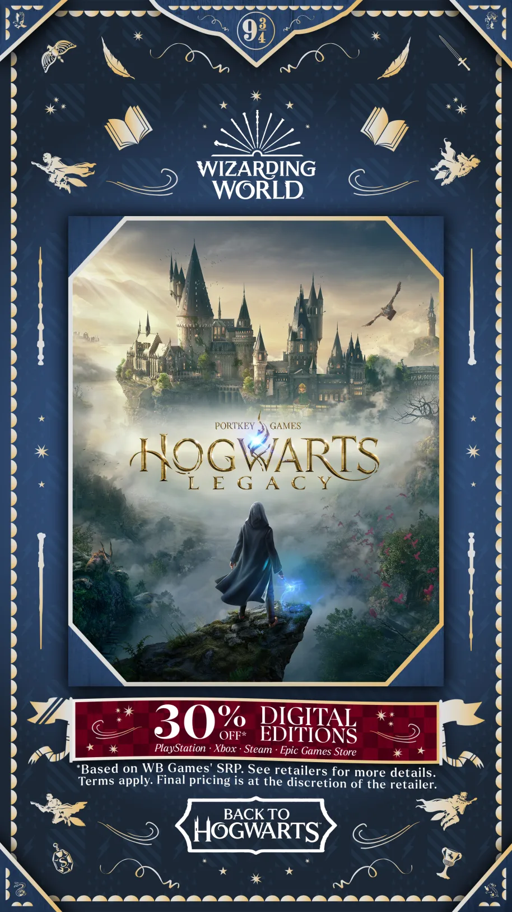
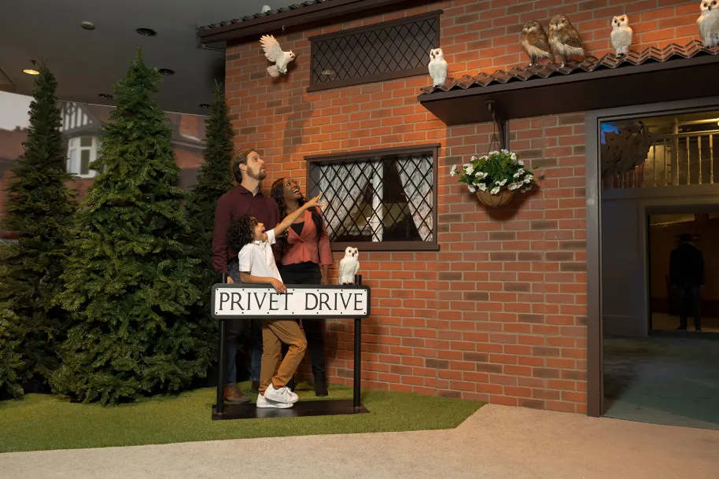
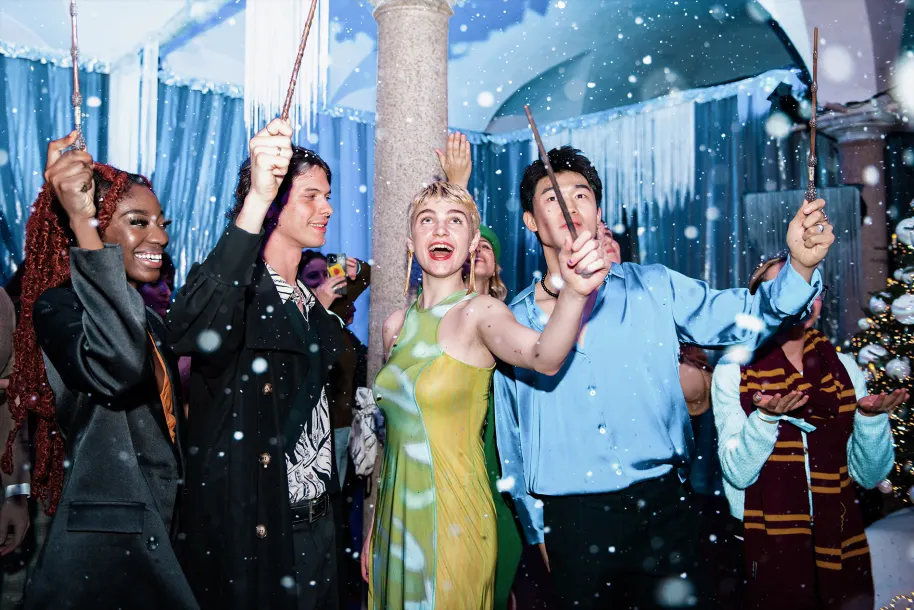

Back to Hogwarts Day is always a super-special moment for fans all over the world, and we loved hanging out with superfans Jake and Adriana as they took us back and forth through the Wizarding World in 2023, interspersed with what you, the fans, have been creating throughout the year too! (We cry-laughed at some of your TikToks – thank you for that.)
Here are some notable highlights from the show. And of course, the full video to catch-up.
Did you know it’s been 25 years since the Sorcerer’s Stone released in the US?
First off, a reminder, that it has somehow – without barely blinking – been 25 years since the first Harry Potter book was publishing by Scholastic, bringing its magic across the pond in the US. Of course, this calls for a celebration on top of a celebration! Scholastic are preparing all manner of bewitching activities for US fans later this year. And we’ve already had some gorgeous refreshed Harry Potter book covers celebrating Mary GrandPre’s original art on the American books.

The Harry Potter Wizarding Almanac is just around the corner
This October, a new, exciting compendium of the secrets of the wizarding world is launching called the Harry Potter Wizarding Almanac. Resplendent in full-colour illustrations (with the help of a team of notable artists) the Almanac endeavours to dig deep into Hogwarts, our favourite Harry Potter characters, and fun facts around the wizarding world you may not have thought about. Prepare to dig deep into every nook and cranny of the Harry Potter stories with this must-have new addition to your bookshelf! Out 20th October.

Hogwarts Legacy celebrates its year of magic with a 30 percent discount on digital editions
Can you believe Hogwarts Legacy came out only this year? Indeed, it was only six months or so ago that this hugely immersive open-world game opened our eyes to the most detailed depiction of Hogwarts castle yet. Now, as a special Back to Hogwarts treat, WB Games want to offer you all a magical discount for digital editions. Across PlayStation devices, XBox and Steam, you can now grab the game for a little less, on whatever console you use.
And check out the trailer for an incredible new behind-the-scenes documentary
A love letter to the Wizarding World, learn how Avalanche Software sought to capture the magic of the wizarding world in their recreation of Hogwarts. Find out more about the hard work that went into crafting the ultimate experience for players later this year in The Wizardry of Hogwarts Legacy.

Meanwhile, Hogwarts Mystery looks beyond Hogwarts
While we spend today celebrating going back to Hogwarts, mobile game Hogwarts Mystery is going beyond Hogwarts, exploring wizarding life once you’ve graduated. In the showcase, you can see a glimmer of the game’s new expansion, where players will be able to get a job and even their own apartment. Well, even wizards and witches have to grow up some time. Maybe they can perform a Vanishing Spell on their bills though?

And Magic Awakened continues to spread its sparkle all over the world
2023 was a momentous year for Portkey Games, with not only Hogwarts Legacy entering our lives, but also Harry Potter: Magic Awakened, the uniquely designed RPG card-game with a twist. This year, Magic Awakened rolled out worldwide, after a huge success across mainland China.
Discover your own Chocolate Frog card or vomit slugs (!) with our new AR filters
Dear TikTokers and Instagram obsessives, we have two new filters to really bring wizarding world energy to your feed. You may have already tried our “Mis-Spelled” filter, which we launched earlier this week, inviting you to cast a variety of spells on yourself, with varied effects. Cast Bombarda, and you’ll get quite an explosive result. Cast Slugulus Erecto, and… well, you can probably guess what this one does.
Today, we’ve also launched our new Chocolate Frog card filter, available for a short time only on Instagram. Discover your very own Chocolate Frog card, where you’ll discover your very own wizarding world achievement. Finally, a chance to be more famous than Gilderoy Lockhart...
Warner Bros. Studio Tour London introduces a night of darkness: “Nox”
Okay, so now it’s September, we can start thinking of Hallowe’en now, right?
Daring Harry Potter Fan Club members are invited to this newest event at Warner Bros. Studio Tour London – The Making of Harry Potter.
This exclusive Hallowe’en event on 31st October will see visitors welcomed into the Great Hall with a selection of canapes at a standing reception under a ceiling filled with one hundred floating pumpkins, as seen in Harry Potter and the Philosopher’s Stone. Constant vigilance is advised as the Death Eaters will be lurking around every corner at the Studio Tour on this evening.
For the first time, there will also be a choice of pop-up bars and food stations throughout the Studio Tour and backlot at this 16+ event where a range of dishes and desserts will be available to purchase. Visit the official site for details on this one – and be sure to sign up to the Harry Potter Fan Club if you’re interested.
While over in Tokyo, we reminisce about Japan’s Studio Tour grand opening
Meanwhile, many, many miles away… a new Studio Tour opened in Japan this year, bringing the behind-the-scenes magic of the Harry Potter films to a whole new audience. Our showcase wanted to pay homage to this spectacular new experience, with the help of a few famous friends, including Tom Felton and Matthew Lewis. The Ministry of Magic display set is particularly exceptional.
Harry Potter and the Cursed Child London invites schools to put on their own production
Cursed Child is coming to schools! Yes, the hit-play, which first launched in London in 2016, is being licensed for school productions across the globe from next year. We can’t wait to discover so many brand-new little Scorpius Malfoy performances all across the world! Check out the registration website to get involved.
Mattel Creations takes on the Wizarding World
It's been a big year for Mattel (let’s just say that 2023 has had very strong Ken-ergy) but this new collaboration with Wizarding World has made our day. Voldemort, Dumbledore and Harry are now looking fantastic in plastic – and you can scan the QR code from the Showcase to learn more about how to get these new figures!
Harry Potter: Magic at Play continues to open new experiences
Harry Potter: Magic at Play opened in Chicago earlier this year, inviting fans of all ages to embrace the spirit of adventure. This fun homage to the wizarding world comes with training games, classes, immersive activities, photo opps and much, much more, already casting a spell on US visitors. And while this experience may soon be ending in Chicago, it is very soon to come to Seattle, Washington. Visit the website for more details.

Harry Potter: A Yule Ball Celebration keeps on dancing too!
No need to look like your Great Aunt Tessie – but just to let you know, Yule Balls are a real thing now. So, pick up your finest outfit and ready yourself for an enchanting dance, inspired by the event you saw during the Triwizard Tournament in Harry Potter and the Goblet of Fire. The event, which features gorgeous ballrooms, festive wizarding wear, professional dancers and delicious drinks and treats, has already got people twirling all across the world.
And! As exclusively revealed in the Showcase, it will soon be opening in a new location: Santiago de Chile! As well as making a triumphant return to fans in Mexico City.
We hope you’ve bought your dress robes! And for fans in Sydney, there is still time to catch the Yule Ball celebration before it departs.
And! As exclusively revealed in the Showcase, it will soon be opening in a new location: Santiago de Chile! We hope you’ve bought your dress robes, Chile!

An exclusive sneak peek at Harry Potter: Visions of Magic, an all-new interactive art experience
Now for something a little more ethereal. Discover hidden places, seek magic and illuminate the invisible with Harry Potter: Visions of Magic, a gorgeous new art experience opening December 2023 in Cologne, Germany . The trailer revealed some hints of artistic takes on mysterious wizarding world locations you will explore – including the French Ministry, Newt’s Menagerie (hello Mooncalves!), and the Hall of Prophecy to name a few! There also looked to be some stunning wand interactivity, which we’re excited to check out.
And finally, a shout-out to Jake’s Snape impression
We loved it. Obviously.
How have you been celebrating Back to Hogwarts Day? There is still time to visit our hub and explore all of the magical activities.